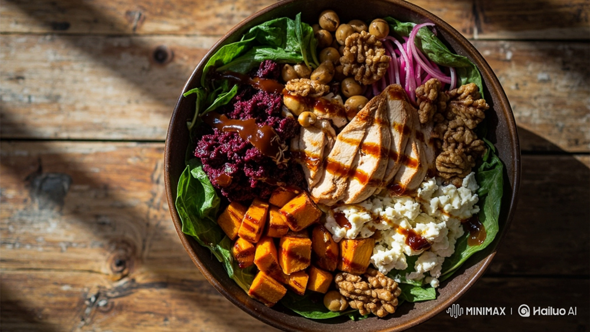
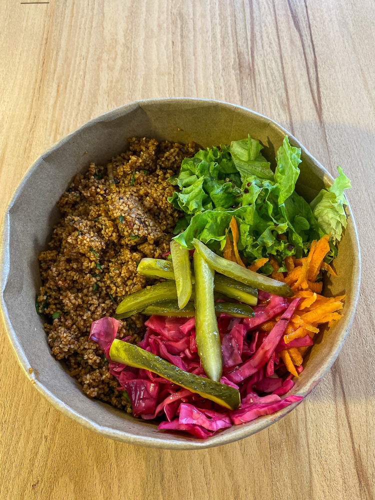
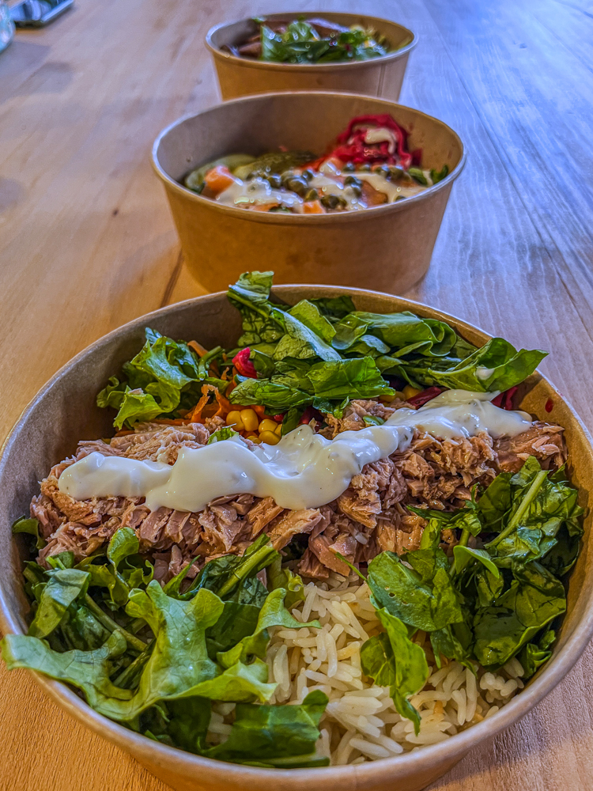
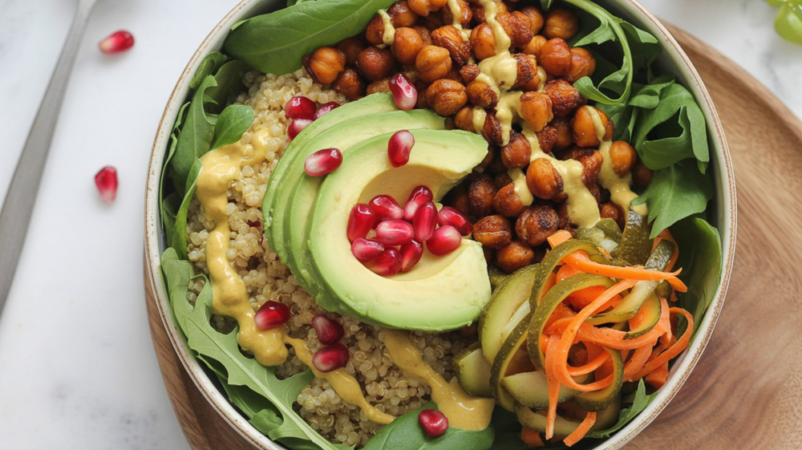

Tatlı Patates & Keçi Peynirli Tavuk Bowl
Fırınlanmış tatlı patates, ıspanak, ızgara tavuk, haşlanmış nohut, keçi peyniri, balsamik sos, pancar turşusu

Kısır Bowl
Adana usülü kısır, marul, rende havuç, karalahana turşusu, nar ekşisi ve zeytinyağı.

Tavuk Sezar Bowl
Marul, basmati, ızgara tavuk, sezar sos.

Ton Balıklı Bowl
Basmati pirinç, marul, rende havuç, kara lahana turşusu, ton balığı, ranch sos.

Vegan Köfte Bowl
Vegan köfte, karabuğday, marul, mısır, mor lahana turşusu, zeytinyağı, nar ekşisi

Vegan Power Bowl
Nohut, karabuğday, roka, tatlı patates, zerdeçallı tahinli sos.